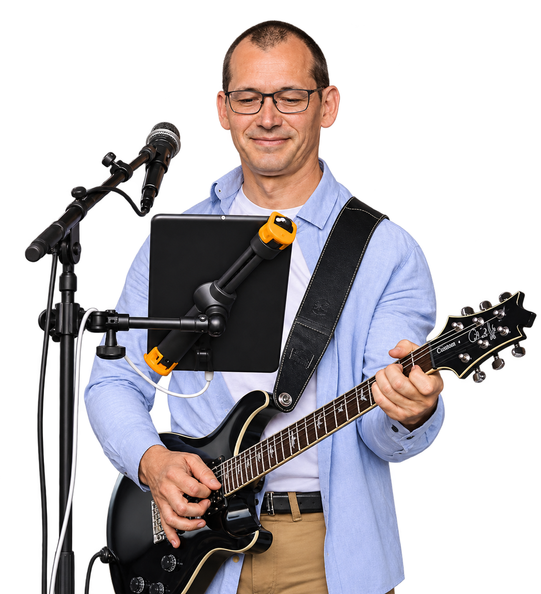
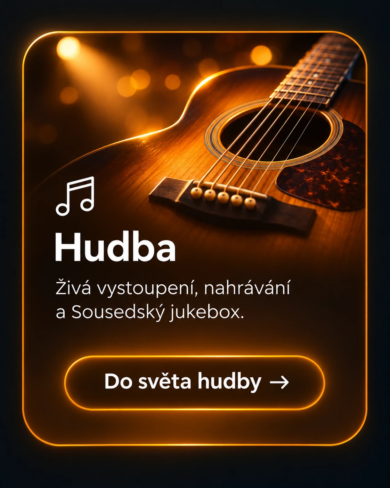
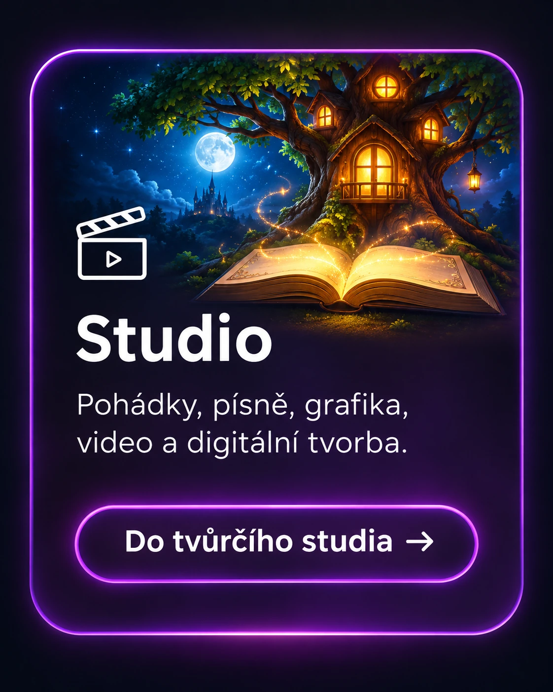
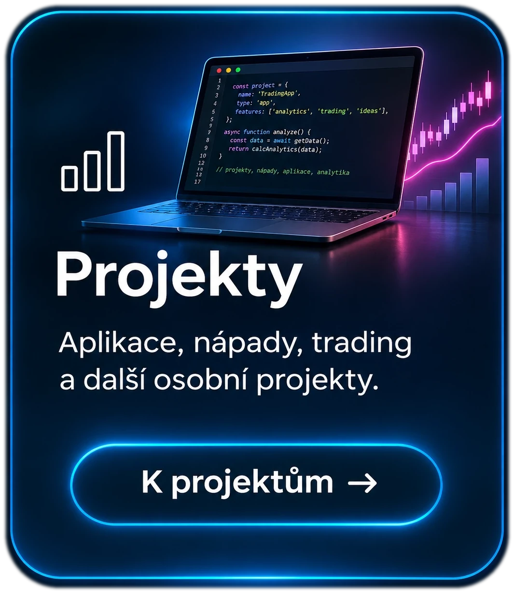

01 / HUDBA
Hudba, která spojuje
Zpěv, kytara a živá vystoupení. Vedle hudebních sestav rozvíjím také Sousedský jukebox – interaktivní výběr písní pro publikum.
Vyzkoušet Sousedský jukebox Viktor Fiedler
HUDBA · TVORBA · TECHNOLOGIE · PŘÍBĚHY
Viktor Fiedler
HUDBA · TVORBA · TECHNOLOGIE · PŘÍBĚHY
TVORBA · VZDĚLÁVÁNÍ · HUDBA
Místě, kde se potkává hudba, škola, technologie, pohádky a další nápady. Tvořím, hraji, učím, vymýšlím a zkouším, jak propojit radost z tvorby s moderními možnostmi dnešní doby.
Poznejte mou tvorbu

Hudba – živá vystoupení, nahrávání a Sousedský jukebox. Do světa hudby. Škola – výuka, ICT, projekty a sdílení zkušeností. Do světa vzdělávání.
Studio – pohádky, písně, grafika, video a digitální tvorba. Do tvůrčího studia.
Projekty – aplikace, nápady, trading a další osobní projekty.01 / HUDBA
Zpěv, kytara a živá vystoupení. Vedle hudebních sestav rozvíjím také Sousedský jukebox – interaktivní výběr písní pro publikum.
Vyzkoušet Sousedský jukebox02 / ŠKOLA
Hudební výchova, informatika, robotika a smysluplné využití digitálních technologií. Prostor pro školní projekty, zkušenosti a inspiraci.
03 / STUDIO
Autorské pohádky, písně a další digitální tvorba. Mezi připravovanými projekty je trilogie začínající Pohádkou o ničem.
04 / PROJEKTY
Fotbalový radar, analytické nástroje, tradingové experimenty a další aplikace. Jednotlivé projekty postupně získají vlastní stránky a odkazy.
O MNĚ
Hudebník, pedagog a nadšenec do technologií. Tento web je společným domovem mých různorodých projektů – od pódia a učebny až po digitální svět.